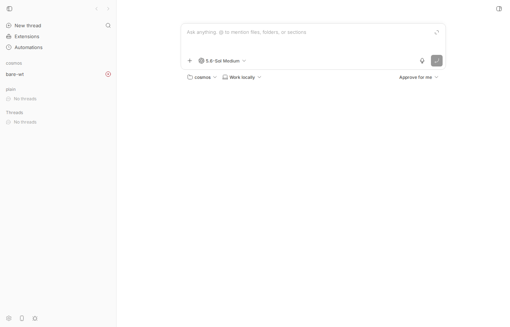
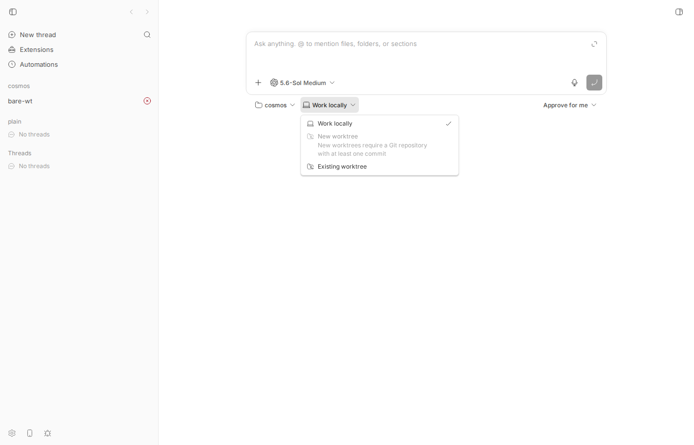
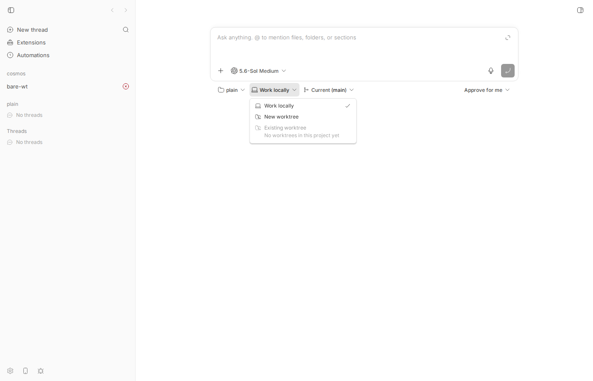
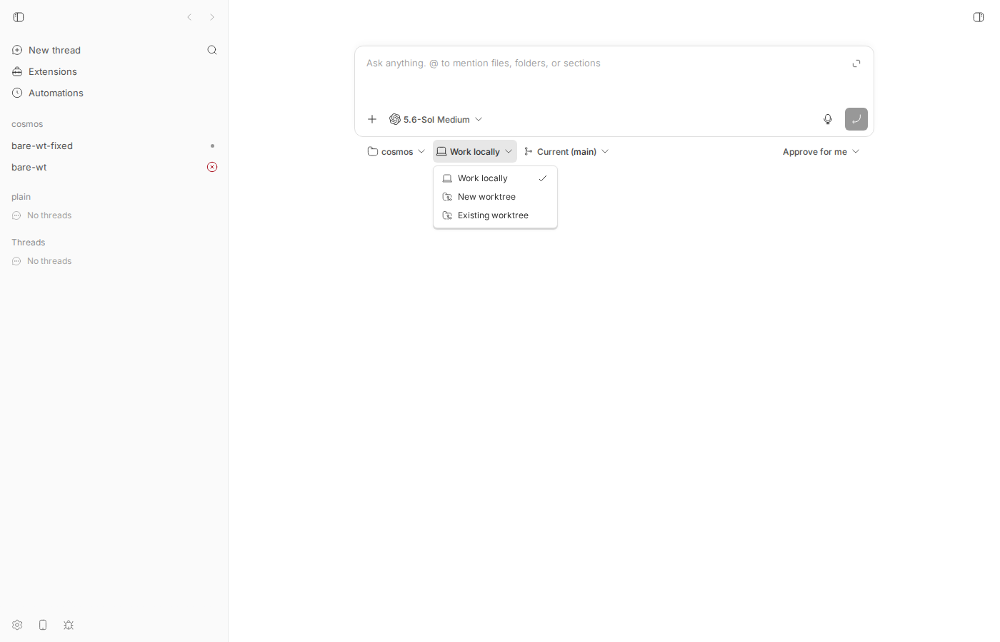

#1595 · Bare repo + worktrees layout is not detected as a git repository
TL;DR
Plain-language framing. Some git users keep a project as a folder that contains a bare clone (a repository with no checked-out files, here .bare/), a one-line .git file that says gitdir: ./.bare, and one sibling folder per branch created with git worktree add. The folder root is a real git repository as far as git is concerned (git rev-parse --git-dir, git worktree list, git symbolic-ref HEAD all work), but it is not a work tree: there is no checkout in the root itself.
When such a root is registered as a bb project source, bb's host daemon decides the path is "not a git repository". Every git-gated feature that keys off the project source then turns off: the "New worktree" option in the environment picker is disabled, GET /api/v1/projects/:id/branches returns checkout.kind = "unknown" with reason "Path is not a git repository", and if you bypass the UI (CLI bb thread spawn --new-environment worktree) provisioning fails with not_git_repo: "Cannot create a worktree because the source is not a Git repository".
The cause is exactly what the reporter guessed: the single helper detectGitRepo() in packages/host-workspace/src/git.ts runs git rev-parse --is-inside-work-tree and treats false as "not git". A bare repository answers false with exit code 0. Every gate (ensureGitRepo, readGitRepositoryState, getCheckoutRef, host.list_branches, createWorktree) sits on that one helper. Note the reporter's proposed fallback --is-inside-git-dir does not work for this layout (it prints false in the root, because the root only points at the git dir); --is-bare-repository or --git-dir do. A prototype fix (distinguish "work tree" from "bare source" and let bare sources through the source-side gates) makes the branches endpoint, the picker, and end-to-end worktree provisioning work on this layout, with all host-workspace and host-daemon tests still passing.
The second half of the issue ("Existing worktree" only lists bb-managed environments, not git worktree list output) is accurate but is a feature request rather than a bug, and it is already tracked as #1624.
Claims vs findings
| Claim | Status | Evidence |
|---|---|---|
| Only "Work locally" is available; "New worktree" is disabled for a bare-root project | Verified | Screenshot 1595-picker-open.png; DOM dump shows New worktree with data-disabled="true". Control project (plain clone of the same origin) has it enabled (control). |
| Disabled reason text is "Project source is not a git repository" | Version-dependent | That was the string in v0.37.0. Since 893a05ae6 ("Allow Tasks dispatch without requiring Git", #1396, in v0.38.0) the app renders "New worktrees require a Git repository with at least one commit" for the same checkout.kind === "unknown" response (apps/app/src/views/root-compose-environment-selection.ts#L37-L38). Same bug, different label. |
| "Existing worktree" says "No worktrees in this project yet" although 4 worktrees exist | Verified (by design) | The reuse list is built from bb environments (thread → environment buckets in root-compose-environment-selection.ts, rendered by WorktreePicker), never from git worktree list. In my repro that row is only enabled once a (failed) bb worktree env exists. Feature request, tracked as #1624. |
Root is a valid git repository but not a work tree (--is-inside-work-tree = false/exit 0, --is-bare-repository = true) | Verified | make-bare-layout.out, git 2.53.0. |
Detection is a single helper using rev-parse --is-inside-work-tree | Verified | packages/host-workspace/src/git.ts#L590-L599 detectGitRepo; the daemon bundle snippet in the issue is its minified form. |
All git gates use it, so a bare root gets isGitRepo: false | Verified | ensureGitRepo, readGitRepositoryState, getCheckoutRef, getCurrentBranch, listHostBranches, createWorktree and provision.ts all call it (Root cause). Failed env from CLI spawn has "isGitRepo":false. |
Falling back to --is-inside-git-dir would cover this layout | Refuted | git rev-parse --is-inside-git-dir prints false in the bare root (the root is not inside .bare/; the .git file merely points there). --is-bare-repository (true) or --git-dir (succeeds) are the working checks. |
There is already a listWorktrees() that could feed the reuse list | Verified, with a caveat | packages/host-workspace/src/workspace.ts#L1350-L1355 exists but is a private method of WorkspaceManager, used for temp-worktree cleanup and branch lookup; it is not exposed through any host RPC. |
{kind=link}
{kind=link}
Environment
- bb
16ceb3a54(main, 2026-08-18) checked out in worktree/home/sawyer/projects/bb/.claude/worktrees/wf_242c3e11-a10-18.origin/mainis 5 commits ahead (a108fa7ef); none touchpackages/host-workspaceorhost-branches.ts, so the bug is still present there. - Linux 7.0.0-29-generic, node v24.18.0, git 2.53.0, codex-cli 0.147.0 (provider
codex). - Dev instance: app
:14008, server:22008, host daemon:30008, data dir/home/sawyer/.bb-dev/projects-bb-.claude-worktrees-wf_242c3e11-a10-18-4ec3be00bc05, machinehost_by68ynypfv("bee"). - Projects:
proj_mcn754hcb8"cosmos" →/tmp/bb-1595/cosmos(bare layout); controlproj_87t2bdjuvh"plain" →/tmp/bb-1595/plain(ordinary clone of the same origin).
Minimal reproduction
1. Build the layout (30 s, no bb needed)
Script 1595/repro/make-bare-layout.sh creates /tmp/bb-1595/{origin,cosmos} exactly like the issue (cosmos/.bare, cosmos/.git = gitdir: ./.bare, worktrees feature-a, feature-b) and prints the git probes. Output (make-bare-layout.out):
$ /tmp/bb-reports/issues/1595/repro/make-bare-layout.sh /tmp/bb-1595 --- git worktree list /tmp/bb-1595-probe/cosmos/.bare (bare) /tmp/bb-1595-probe/cosmos/feature-a 1cec1d1 [feature-a] /tmp/bb-1595-probe/cosmos/feature-b 1cec1d1 [feature-b] --- rev-parse --is-inside-work-tree false exit=0 --- rev-parse --is-bare-repository true --- rev-parse --is-inside-git-dir false --- rev-parse --git-dir /tmp/bb-1595-probe/cosmos/.bare --- symbolic-ref --short HEAD main --- rev-parse --verify HEAD 1cec1d18f0d97f5d6b856bdd95e2aeeed8317901 --- status --porcelain (fails in a bare repo) fatal: this operation must be run in a work tree exit=128
Note --is-inside-work-tree = false with exit 0 (this is what bb checks), --is-inside-git-dir = false (the reporter's suggested fallback would not help), --is-bare-repository = true.
2. Unit-level repro (fails on main)
1595/repro/git-bare-layout-1595.test.ts, copy to packages/host-workspace/test/ and run pnpm exec vitest run test/git-bare-layout-1595.test.ts from packages/host-workspace. It builds the same layout in a temp dir and asserts what the daemon relies on. On 16ceb3a54 three of four assertions fail (vitest-base.txt): readGitRepositoryState returns not_git (expected has_commits), getCheckoutRef returns {kind:"unknown", reason:"Path is not a git repository"}, and createWorktree rejects with WorkspaceError not_git_repo. The first test (git itself sees a repo) passes, proving the layout is valid.
RUN v4.1.1 /home/sawyer/projects/bb/.claude/worktrees/wf_242c3e11-a10-18/packages/host-workspace
❯ @bb/host-workspace test/git-bare-layout-1595.test.ts (4 tests | 3 failed) 166ms
× readGitRepositoryState() reports has_commits for the bare root 43ms
× getCheckoutRef() does not report 'not a git repository' 35ms
× createWorktree() can add a worktree from the bare root 39ms
⎯⎯⎯⎯⎯⎯⎯ Failed Tests 3 ⎯⎯⎯⎯⎯⎯⎯
FAIL @bb/host-workspace test/git-bare-layout-1595.test.ts > bare repo + worktrees layout (#1595) > readGitRepositoryState() reports has_commits for the bare root
AssertionError: expected 'not_git' to be 'has_commits' // Object.is equality
Expected: "has_commits"
Received: "not_git"
❯ test/git-bare-layout-1595.test.ts:64:48
62| const { root } = await initBareLayout();
63| // FAILS on 16ceb3a54: returns "not_git".
64| expect(await readGitRepositoryState(root)).toBe("has_commits");
| ^
65| });
66|
⎯⎯⎯⎯⎯⎯⎯⎯⎯⎯⎯⎯⎯⎯⎯⎯⎯⎯⎯⎯⎯⎯⎯⎯[1/3]⎯
FAIL @bb/host-workspace test/git-bare-layout-1595.test.ts > bare repo + worktrees layout (#1595) > getCheckoutRef() does not report 'not a git repository'
AssertionError: expected 'unknown' not to be 'unknown' // Object.is equality
❯ test/git-bare-layout-1595.test.ts:73:31
71| // This is exactly what host.list_branches returns to the app, whi…
72| // disables "New worktree" in the environment picker.
73| expect(checkout.kind).not.toBe("unknown");
| ^
74| });
75|
⎯⎯⎯⎯⎯⎯⎯⎯⎯⎯⎯⎯⎯⎯⎯⎯⎯⎯⎯⎯⎯⎯⎯⎯[2/3]⎯
FAIL @bb/host-workspace test/git-bare-layout-1595.test.ts > bare repo + worktrees layout (#1595) > createWorktree() can add a worktree from the bare root
AssertionError: promise rejected "WorkspaceError: Cannot create a worktree … { code: '…' }" instead of resolving
❯ test/git-bare-layout-1595.test.ts:89:6
87| timeoutMs: 60_000,
88| }),
89| ).resolves.toEqual({ path: targetPath });
| ^
90| });
91| });
Caused by: WorkspaceError: Cannot create a worktree because the source is not a Git repository: /tmp/bb-1595-PUf3Cw/cosmos. Initialize it and create at least one commit, then try again.
❯ createWorktree src/provisioning.ts:348:13
❯ test/git-bare-layout-1595.test.ts:81:5
⎯⎯⎯⎯⎯⎯⎯⎯⎯⎯⎯⎯⎯⎯⎯⎯⎯⎯⎯⎯⎯⎯⎯⎯⎯⎯⎯⎯⎯⎯
Serialized Error: { code: 'not_git_repo' }
⎯⎯⎯⎯⎯⎯⎯⎯⎯⎯⎯⎯⎯⎯⎯⎯⎯⎯⎯⎯⎯⎯⎯⎯[3/3]⎯
Test Files 1 failed (1)
Tests 3 failed | 1 passed (4)
Start at 07:39:00
Duration 611ms (transform 226ms, setup 0ms, import 362ms, tests 166ms, environment 0ms)
Test source
// Repro for get-bb/bb#1595: a "bare repo + worktrees" project root
// (`<root>/.bare` bare clone, `<root>/.git` = "gitdir: ./.bare", worktrees
// as siblings) is not detected as a git repository by host-workspace, so the
// worktree flows are disabled / fail with not_git_repo.
import fs from "node:fs/promises";
import os from "node:os";
import path from "node:path";
import { afterEach, describe, expect, it } from "vitest";
import {
getCheckoutRef,
readGitRepositoryState,
runGit,
} from "../src/git.js";
import { createWorktree } from "../src/provisioning.js";
const tempDirs: string[] = [];
afterEach(async () => {
await Promise.all(
tempDirs.splice(0).map((dir) => fs.rm(dir, { recursive: true, force: true })),
);
});
async function initBareLayout(): Promise<{ root: string }> {
const base = await fs.mkdtemp(path.join(os.tmpdir(), "bb-1595-"));
tempDirs.push(base);
const origin = path.join(base, "origin");
await fs.mkdir(origin);
await runGit(["init", "-b", "main"], { cwd: origin });
await runGit(["config", "user.name", "BB Tests"], { cwd: origin });
await runGit(["config", "user.email", "bb@example.com"], { cwd: origin });
await fs.writeFile(path.join(origin, "README.md"), "hello\n", "utf8");
await runGit(["add", "."], { cwd: origin });
await runGit(["commit", "-m", "Initial commit"], { cwd: origin });
await runGit(["branch", "feature-a"], { cwd: origin });
// ~/www/cosmos layout from the issue.
const root = path.join(base, "cosmos");
await fs.mkdir(root);
await runGit(["clone", "--bare", origin, ".bare"], { cwd: root });
await fs.writeFile(path.join(root, ".git"), "gitdir: ./.bare\n", "utf8");
await runGit(["worktree", "add", "feature-a", "feature-a"], { cwd: root });
return { root };
}
describe("bare repo + worktrees layout (#1595)", () => {
it("git itself recognises the root as a repository", async () => {
const { root } = await initBareLayout();
const gitDir = await runGit(["rev-parse", "--git-dir"], { cwd: root });
expect(gitDir.stdout.trim()).toBe(path.join(root, ".bare"));
const bare = await runGit(["rev-parse", "--is-bare-repository"], {
cwd: root,
});
expect(bare.stdout.trim()).toBe("true");
const list = await runGit(["worktree", "list", "--porcelain"], {
cwd: root,
});
expect(list.stdout).toContain("branch refs/heads/feature-a");
});
it("readGitRepositoryState() reports has_commits for the bare root", async () => {
const { root } = await initBareLayout();
// FAILS on 16ceb3a54: returns "not_git".
expect(await readGitRepositoryState(root)).toBe("has_commits");
});
it("getCheckoutRef() does not report 'not a git repository'", async () => {
const { root } = await initBareLayout();
const checkout = await getCheckoutRef(root);
// FAILS on 16ceb3a54: { kind: "unknown", reason: "Path is not a git repository" }
// This is exactly what host.list_branches returns to the app, which then
// disables "New worktree" in the environment picker.
expect(checkout.kind).not.toBe("unknown");
});
it("createWorktree() can add a worktree from the bare root", async () => {
const { root } = await initBareLayout();
const targetPath = path.join(path.dirname(root), "wt-new");
// FAILS on 16ceb3a54: throws WorkspaceError not_git_repo
// "Cannot create a worktree because the source is not a Git repository".
await expect(
createWorktree({
sourcePath: root,
targetPath,
branchName: "bb/new",
baseBranch: "main",
timeoutMs: 60_000,
}),
).resolves.toEqual({ path: targetPath });
});
});
3. API repro against a running instance
- Start your dev instance (
scripts/bb-dev-app current) and get the host id (BB_SERVER_URL=http://localhost:<server> pnpm bb:dev machine list). - Register the bare root as a project:
$ curl -s -X POST $BB_SERVER_URL/api/v1/projects -H 'content-type: application/json' \ -d '{"name":"cosmos","source":{"type":"local_path","path":"/tmp/bb-1595/cosmos","hostId":"host_by68ynypfv"}}' {"id":"proj_mcn754hcb8","kind":"standard","name":"cosmos","gitRemoteUrl":"/tmp/bb-1595/origin","createdAt":1787038353264,"updatedAt":1787038353265,"sources":[{"id":"src_tjbeka2dxt","projectId":"proj_mcn754hcb8","type":"local_path","hostId":"host_by68ynypfv","path":"/tmp/bb-1595/cosmos","isDefault":true,"createdAt":1787038353264,"updatedAt":1787038353264}]}Note bb did readgitRemoteUrlfrom the bare repo (project.inspectrunsgit remote get-url originwithout a work-tree gate,apps/host-daemon/src/command-handlers/project.ts#L49-L60), so bb is already inconsistent about whether this path is a repository. - Ask for branches (this is what the environment picker calls):
$ curl -s "$BB_SERVER_URL/api/v1/projects/proj_mcn754hcb8/branches?hostId=host_by68ynypfv" {"branches":[],"branchesTruncated":false,"checkout":{"kind":"unknown","reason":"Path is not a git repository"},"defaultBranch":null,"defaultBranchRelation":null,"hasUncommittedChanges":false,"operation":{"kind":"none"},"originDefaultBranch":null,"remoteBranches":[],"remoteBranchesTruncated":false,"selectedBranch":null,"defaultWorktreeBaseBranch":null}Expected (control, plain clone of the same origin,proj_87t2bdjuvh):{"branches":["main"],"branchesTruncated":false,"checkout":{"kind":"branch","branchName":"main","headSha":"4ee97dc6c51317f663a7e4cbf2dba737d6b110e0"},"defaultBranch":"main","defaultBranchRelation":"equal","hasUncommittedChanges":false,"operation":{"kind":"none"},"originDefaultBranch":"origin/main","remoteBranches":["origin/main","origin/feature-a","origin/feature-b"],"remoteBranchesTruncated":false,"selectedBranch":null,"defaultWorktreeBaseBranch":"origin/main"}Actual:checkout.kind = "unknown", reason"Path is not a git repository", no branches. The app mapsunknownto the disabled "New worktree" row (apps/app/src/views/root-compose-environment-selection.ts#L112-L125). - Bypass the UI and try to provision a worktree anyway:
$ BB_SERVER_URL=http://localhost:22008 pnpm bb:dev thread spawn --project proj_mcn754hcb8 --machine host_by68ynypfv \ --new-environment worktree --provider codex --title bare-wt --prompt "Reply only with ok." --json "id": "thr_jdknfv2g3g", $ pnpm bb:dev thread show thr_jdknfv2g3g Thread: thr_jdknfv2g3g Status: error Title: bare-wt Project: proj_mcn754hcb8 Environment: Provisioning (env_kixveknw74) Pull request: unavailable HTTP 409: Environment unavailable Created: 8/18/2026, 7:33:34 AM Updated: 8/18/2026, 7:33:34 AM $ pnpm bb:dev thread log thr_jdknfv2g3g ── User ──────────────────────────────────────────────────── Reply only with ok. ── Provisioning thread failed ────────────────────────────── Preparing worktree Workspace setup failed (30ms) ── Error ─────────────────────────────────────────────────── Provisioning thread failed Cannot create a worktree because the source is not a Git repository: /tmp/bb-1595/cosmos. Initialize it and create at least one commit, then try again.The environment record ends as"isGitRepo":false,"status":"error"(spawn-worktree-bare-env.json).
4. Visual repro




Root cause
packages/host-workspace/src/git.ts#L590-L599:
export async function detectGitRepo(cwd, options = {}): Promise<boolean> {
const result = await runGit(["rev-parse", "--is-inside-work-tree"], { cwd, allowFailure: true, ... });
return result.exitCode === 0 && trimOutput(result.stdout) === "true";
}
git rev-parse --is-inside-work-tree answers the question "is cwd inside a checkout?", not "is cwd a git repository?". In a bare repository (including a directory whose .git file points at a bare gitdir) git exits 0 and prints false. Everything downstream conflates the two questions:
packages/host-workspace/src/git.ts#L602-L614ensureGitRepothrowsnot_git_repo; used byreadDefaultBranch,readDefaultBranchRefs,hasRef,hasUncommittedChanges,getWorkspaceGitOperation, and everyWorkspacegit method.packages/host-workspace/src/git.ts#L618-L629readGitRepositoryStatereturns"not_git", whichpackages/host-workspace/src/provisioning.ts#L346-L357createWorktreeturns into the "Cannot create a worktree because the source is not a Git repository" error seen in the CLI repro.packages/host-workspace/src/git.ts#L670-L676getCheckoutRefreturns{kind:"unknown", reason:"Path is not a git repository"}.apps/host-daemon/src/command-handlers/host-branches.ts#L133-L158listHostBranchesshort-circuits ondetectGitRepoand returns the empty payload with thatcheckout; the server routeapps/server/src/routes/projects.ts#L832-L858forwards it; the app'sapps/app/src/views/root-compose-environment-selection.ts#L112-L125mapsunknown→ disabled reason;apps/app/src/components/pickers/EnvironmentPicker.tsx#L513-L521renders "New worktree" disabled.packages/host-workspace/src/provision.ts#L692-L694marks any unmanaged workspace at that pathisGitRepo=false, which also hides the git UI for a "Work locally" thread at the root (arguably correct there, since there is no checkout to diff).
Why the symptom follows: the picker's only signal for "can I create a worktree from this source?" is checkout.kind from host.list_branches, and the daemon answers "unknown / not a git repository" for any bare source. Independently, even a direct provisioning request dies at readGitRepositoryState. Both roads pass through detectGitRepo.
Deeper issue. bb uses one boolean (isGitRepo) for two different capabilities: "this path can be a source for worktrees / branch listing" (needs a git dir, bare is fine) and "this path is a workspace with a checkout" (needs a work tree: git status, diffs, commits all fail in a bare repo with fatal: this operation must be run in a work tree). A fix that simply flips detectGitRepo to also accept bare would make hasUncommittedChanges/getWorkspaceGitOperation (both called by listHostBranches) throw git_command_failed, and would enable diff/commit UI on a bare-root local workspace. The two notions have to be separated.
Introduced by 9cd0484b3 (2026-04-06) and unchanged since; not a regression.
Proposed fix (first principles)
Confidence high; a prototype is in 1595/repro/prototype-fix.diff and was exercised end to end (below). Shape:
- In
packages/host-workspace/src/git.tsadddetectGitRepoKind(cwd) → "work-tree" | "bare" | "none"using one call,git rev-parse --is-inside-work-tree --is-bare-repository(exit ≠ 0 → none). KeepdetectGitRepo= work-tree only (workspace semantics: diffs, status, commits) and adddetectGitSource= work-tree or bare (source semantics). - Use the source variant where the path is a source:
readGitRepositoryState(→createWorktree),getCheckoutRef,ensureGitRepocallers that only read refs (readDefaultBranch,readDefaultBranchRefs,hasRef,listBranches), and the gate inlistHostBranches. - Make the two work-tree-only helpers that
listHostBranchesalso calls tolerate bare:hasUncommittedChanges→false,getWorkspaceGitOperation→{kind:"none"}. - Leave
provision.ts'sisGitRepo(workspace) semantics alone so a "Work locally" thread at the bare root keeps the git UI off. No wire shape changes, so noHOST_DAEMON_PROTOCOL_VERSIONbump is needed; the disabled-reason strings in the app also stay valid. - Add the repro test (adjusted to the final helper names) to
packages/host-workspace/test/.
What could go wrong: ensureGitRepo is also used by Workspace methods; if it is widened to bare, a caller that reaches those methods with a bare path would now fail with git_command_failed from git status/diff instead of a clean not_git_repo. Server routes gate on environment.isGitRepo (still false for bare workspaces) so this is unreachable today, but a cleaner variant keeps ensureGitRepo as-is and adds ensureGitSource for the ref-reading helpers. Also, a bare clone made with git clone --bare has no refs/remotes/origin/* and no fetch refspec, so remoteBranches is empty and defaultWorktreeBaseBranch falls back to the local main (visible in the fixed output); that is correct behaviour, not a bug. Worktree layouts where the root is the bare dir (no .git file, e.g. ~/cosmos.git/) are covered by the same --is-bare-repository check.
Evidence the prototype works (host-workspace + host-daemon rebuilt, dev instance restarted): the branches endpoint on the same project now returns
{"branches":["main","feature-a","feature-b","feature-c"],"branchesTruncated":false,"checkout":{"kind":"branch","branchName":"main","headSha":"4ee97dc6c51317f663a7e4cbf2dba737d6b110e0"},"defaultBranch":"main","defaultBranchRelation":null,"hasUncommittedChanges":false,"operation":{"kind":"none"},"originDefaultBranch":null,"remoteBranches":[],"remoteBranchesTruncated":false,"selectedBranch":null,"defaultWorktreeBaseBranch":"main"}
and the same CLI spawn provisions and runs (log):
── User ──────────────────────────────────────────────────── Reply only with ok. ── Provisioned thread ────────────────────────────────────── Preparing worktree Creating worktree HEAD is now at 4ee97dc init Preparing worktree (new branch 'bb/bare-wt-fixed-thr_rnwsxwbgd7') Created worktree (16ms) Using workspace: /home/sawyer/.bb-dev/projects-bb-.claude-worktrees-wf_242c3e11-a10-18-4ec3be00bc05/worktrees/env_gnmcx2fw5r/cosmos Using branch: bb/bare-wt-fixed-thr_rnwsxwbgd7 (4ee97dc) ── Assistant ─────────────────────────────────────────────── ok
git -C /tmp/bb-1595/cosmos worktree list afterwards shows the new bb worktree registered next to feature-a/feature-b. Repro test: 4/4 pass with the prototype (vitest-prototype-fix.txt); turbo run test --filter=@bb/host-workspace --filter=@bb/host-daemon: 217 + 582 tests pass (prototype-tests.txt).
Prototype diff (not a polished PR; ensureGitRepo widened for brevity, see caveat above)
diff --git a/apps/host-daemon/src/command-handlers/host-branches.ts b/apps/host-daemon/src/command-handlers/host-branches.ts
index 0f45e65ac..c246cc922 100644
--- a/apps/host-daemon/src/command-handlers/host-branches.ts
+++ b/apps/host-daemon/src/command-handlers/host-branches.ts
@@ -1,7 +1,7 @@
import path from "node:path";
import type { GitBranchRefClassification } from "@bb/domain";
import {
- detectGitRepo,
+ detectGitSource,
fetchRemoteBranches,
getCheckoutRef,
getGitCommonDir,
@@ -137,7 +137,7 @@ export async function listHostBranches(
throw new CommandDispatchError("invalid_path", "Path must be absolute");
}
- if (!(await detectGitRepo(command.path))) {
+ if (!(await detectGitSource(command.path))) {
return {
branches: [],
branchesTruncated: false,
diff --git a/packages/host-workspace/src/git.ts b/packages/host-workspace/src/git.ts
index c60fe6dd1..7f5d204dc 100644
--- a/packages/host-workspace/src/git.ts
+++ b/packages/host-workspace/src/git.ts
@@ -587,23 +587,58 @@ async function findWorkspaceGitOperationMarker(
return undefined;
}
+export type GitRepoKind = "work-tree" | "bare" | "none";
+
+/**
+ * Classifies `cwd`: inside a work tree, at/inside a bare repository (for
+ * example the "bare clone + sibling worktrees" layout where `<root>/.git`
+ * is a gitdir file pointing at `<root>/.bare`), or not a repository at all.
+ */
+export async function detectGitRepoKind(
+ cwd: string,
+ options: GitTimeoutOptions = {},
+): Promise<GitRepoKind> {
+ const result = await runGit(
+ ["rev-parse", "--is-inside-work-tree", "--is-bare-repository"],
+ { cwd, allowFailure: true, timeoutMs: options.timeoutMs },
+ );
+ if (result.exitCode !== 0) {
+ return "none";
+ }
+ const [insideWorkTree, bare] = trimOutput(result.stdout).split("\n");
+ if (insideWorkTree === "true") {
+ return "work-tree";
+ }
+ if (bare === "true") {
+ return "bare";
+ }
+ return "none";
+}
+
+/** True when `cwd` is inside a git work tree (a checkout). */
export async function detectGitRepo(
cwd: string,
options: GitTimeoutOptions = {},
): Promise<boolean> {
- const result = await runGit(["rev-parse", "--is-inside-work-tree"], {
- cwd,
- allowFailure: true,
- timeoutMs: options.timeoutMs,
- });
- return result.exitCode === 0 && trimOutput(result.stdout) === "true";
+ return (await detectGitRepoKind(cwd, options)) === "work-tree";
+}
+
+/**
+ * True when `cwd` is a git repository that can serve as the source of a
+ * worktree: a checkout or a bare repository.
+ */
+export async function detectGitSource(
+ cwd: string,
+ options: GitTimeoutOptions = {},
+): Promise<boolean> {
+ return (await detectGitRepoKind(cwd, options)) !== "none";
}
export async function ensureGitRepo(
cwd: string,
options: GitTimeoutOptions = {},
): Promise<void> {
- if (await detectGitRepo(cwd, options)) {
+ if (await detectGitSource(cwd, options)) {
return;
}
@@ -619,7 +654,7 @@ export async function readGitRepositoryState(
cwd: string,
options: GitTimeoutOptions = {},
): Promise<GitRepositoryState> {
- if (!(await detectGitRepo(cwd, options))) {
+ if (!(await detectGitSource(cwd, options))) {
return "not_git";
}
const result = await runGit(["rev-list", "--all", "--max-count=1"], {
@@ -671,7 +706,7 @@ export async function getCheckoutRef(
cwd: string,
options: GitTimeoutOptions = {},
): Promise<GitCheckoutRef> {
- if (!(await detectGitRepo(cwd, options))) {
+ if (!(await detectGitSource(cwd, options))) {
return { kind: "unknown", reason: "Path is not a git repository" };
}
@@ -867,6 +902,9 @@ export async function getWorkspaceGitOperation(
cwd: string,
): Promise<WorkspaceGitOperation> {
await ensureGitRepo(cwd);
+ if ((await detectGitRepoKind(cwd)) === "bare") {
+ return { kind: "none" };
+ }
const [gitDir, status] = await Promise.all([
getAbsoluteGitDir(cwd),
@@ -1467,6 +1505,10 @@ export async function listRemoteBranches(cwd: string): Promise<string[]> {
export async function hasUncommittedChanges(cwd: string): Promise<boolean> {
await ensureGitRepo(cwd);
+ if ((await detectGitRepoKind(cwd)) === "bare") {
+ // A bare repository has no index or work tree to be dirty.
+ return false;
+ }
const status = await runGit(
["--no-optional-locks", "status", "--porcelain=v1", "--untracked-files=all"],
{ cwd },
diff --git a/packages/host-workspace/src/index.ts b/packages/host-workspace/src/index.ts
index cb9c4a522..2c43d292d 100644
--- a/packages/host-workspace/src/index.ts
+++ b/packages/host-workspace/src/index.ts
@@ -30,6 +30,8 @@ export type {
export {
WorkspaceError,
detectGitRepo,
+ detectGitRepoKind,
+ detectGitSource,
fetchRemoteBranches,
getCheckoutRef,
getCurrentBranch,
PR review
No open PRs are linked to this issue.
Related issues
- #1624 Support discovered worktrees and continuing existing branches — covers the second half of this issue (list
git worktree listoutput in "Existing worktree"). - PR #1396 (
893a05ae6) changed the disabled-reason wording from "Project source is not a git repository" to "New worktrees require a Git repository with at least one commit"; the underlyingcheckout.kind === "unknown"path is unchanged.
Appendix
Commands run
git checkout 16ceb3a54 && pnpm install --frozen-lockfile --prefer-offline && pnpm exec turbo run build
/tmp/bb-reports/issues/1595/repro/make-bare-layout.sh /tmp/bb-1595
scripts/bb-dev-app current # app :14008 server :22008 daemon :30008
BB_SERVER_URL=http://localhost:22008 pnpm bb:dev machine list # host_by68ynypfv
curl -s -X POST http://localhost:22008/api/v1/projects -H 'content-type: application/json' -d '{"name":"cosmos","source":{"type":"local_path","path":"/tmp/bb-1595/cosmos","hostId":"host_by68ynypfv"}}'
curl -s "http://localhost:22008/api/v1/projects/proj_mcn754hcb8/branches?hostId=host_by68ynypfv"
git clone -q /tmp/bb-1595/origin /tmp/bb-1595/plain # control project proj_87t2bdjuvh, same branches call
BB_SERVER_URL=http://localhost:22008 node packages/scripts/dist/commands/run-cli.js thread spawn --project proj_mcn754hcb8 --machine host_by68ynypfv --new-environment worktree --provider codex --title bare-wt --prompt "Reply only with ok." --json
... thread show / thread log thr_jdknfv2g3g ; curl .../environments/env_kixveknw74
cd packages/host-workspace && pnpm exec vitest run test/git-bare-layout-1595.test.ts # 3 failed / 1 passed on base
git checkout -b bb/1595-prototype ; apply prototype diff ; vitest again (4 passed)
pnpm exec turbo run test --filter=@bb/host-workspace --filter=@bb/host-daemon --force
pnpm exec turbo run build --filter=@bb/host-daemon ; pnpm dev:stop ; scripts/bb-dev-app current
curl .../projects/proj_mcn754hcb8/branches?hostId=host_by68ynypfv # now lists branches
... thread spawn again → thr_rnwsxwbgd7 idle, "ok"
dev-browser --browser bb1595 --headless run 1595/browser-picker*.js # screenshots
pnpm dev:stop
Files
- create-project.json, branches-bare.json, branches-plain.json, branches-bare-prototype-fix.json
- spawn-worktree-bare-show.txt, spawn-worktree-bare-log.txt, spawn-worktree-bare-env.json, …-prototype-fix-show.txt, …-prototype-fix-log.txt
- repro/:
make-bare-layout.sh,git-bare-layout-1595.test.ts,vitest-base.txt,vitest-prototype-fix.txt,prototype-fix.diff - Browser scripts: browser-picker2.js (bare project), browser-picker3.js (control)